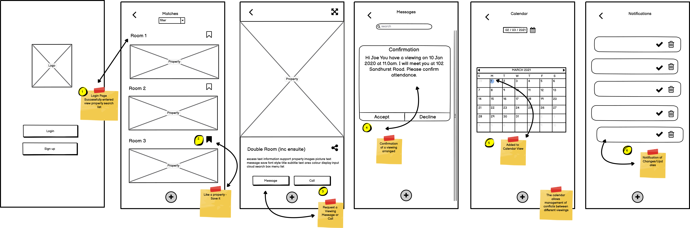
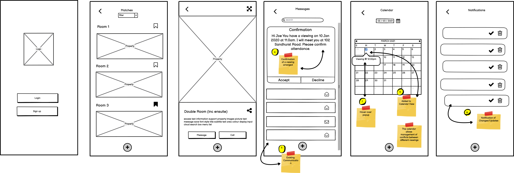
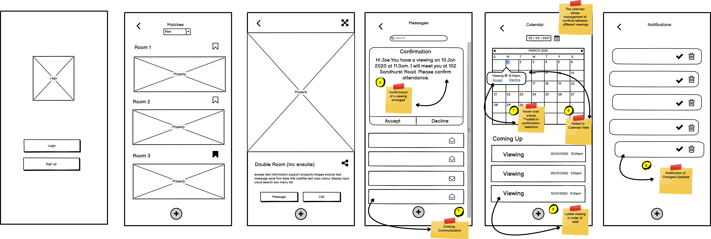

6bedrooms
The app was developed as part of the Google Coursa Certificate for UX.
Project Overview
Product: Rental app, to help find the next houseshare efficiently.
Project Duration: Two Months
My Role
My responsibility was looking to improve upon the existing apps handling houseshare moves. To achieve this, I would be reviewing existing houseshare apps, to identify flaws to improve the user experience.
Project Objective
The Problem
Users were unable manage the entire process of looking for their next houseshare within one app.
The Goal
The user should be able to locate their perferred accommodation, arrange viewings, send calandar invites and recieve notifications within the flow of the app.
1. Design Process
I need to create a design process that will allow me to look at the problem and solution that would help users organize/ manage their viewings. My first aim is to take an empathetic approach to understand the problem. I looked at existing apps on the market, aimed at 18-30 age bracket, and then selected three most popular apps to conduct a comparative analysis. Create two user personas’ ro empathize with the users' experience and motivation for using those apps. Using the above information, I will be able to synthesis and define the problem statement in order to solve it.
The next stage will involve design, I will brainstorm a number of different ways to solve the problem. Here, the answer lies on what feature and flow will connect the user experience of managing their viewings efficiently. This is where mapping out the user flow will be efficient at generating alternative ways for viewing the problem. Following on, I will begin to create LF wireframes, to help visual the user flow to check against whether the user flow works.
The final stage will bring all the information from the ideation phases, to create a prototype. This will assess whether the function of the prototype will help solve the define problem. This is important for understand the constraining and problems with this particular solution, providing a clear view of how the real user would behave, think and feel when they interact with the end feature. This would answer the question on whether the user experience will be improved by this feature.
2. User Research Summary
Pain Points
I looked at the three most popular room-sharing apps that is used largely by the target demographic. I compared the features, by looking at the pros and cons. The competitors are spareRoom (spareroom.com) offering roommates & rooms to rent in the UK and US. Roomster (roomster.com) offers rooms in 192 countries. Badi (badi.com) offering rooms/flatshares in Europe.
The major gaps in the existing apps, is a lack of organization and management of viewings from one central place within the flow of the app itself. There is no access to make it easier to accept, reject viewing based on real-time changes to ensure both the renter and landlord are aware of this. In the survey, I found a need to ensure that this can happen to ensure the right room is found for them based on their criteria.
Comparative Analysis
| Features | SpareRoom | Roomster | Badi |
|---|---|---|---|
| Filter | Yes | Yes | Yes |
| Room List | Yes | Yes | Yes |
| Save | Yes | Yes | Yes |
| Messaging | Mobile or Direct Message | Mobile or Direct Message | Mobile or Direct Message |
| Notification | Just for messages | Just for messages | Just for messages |
| Calendar | No | No | No |
| In-app Calendar Invite | No | No | No |
Persona


The user persona has been based on the prior research conduct during the survey and comparative analysis in order to create the empathy whilst designing the possible solutions. The personas’ have been created based on the target demographic of which the app attracts and survey data collect (18–30 age bracket). Here, the persona’s includes age, gender, occupation, interest combined with their goals and frustrations whilst searching for rooms. They are distinctive to their lifestyles. This now helps organize their information into behaviors, needs, goals/ motivations to product the feature that would be useful to the users.
3. Starting Design
User flow
Here, the user flow is helping determine how many screens will be needed, what order they should appear and what components need to be present. The user flow address two key questions: when do we show specific bits of information and how do we respond to the user behaviour? In this user flow, we have added the Calander/Notification/Invitation features, which runs through the logic of user experience at the said stage. The feature added, flows within the context of the app, and its aim. Therefore, does not get lost in just being an additional feature. The overview is giving a high-level view of what each stage would look like without too much detail. This helps align with the user personas to stay coherent, this keeps it simple to validate the idea and address the pain point, in this case organizing the viewings.
Low-fidelity
Iteration 1
Interation 2
Iteration 3
I wanted to visualize what that user flow would look like with the structure, and the contents within I did this using FlowMapp. This first visual provides the representation of the ideation and exploration of the needs/motivations of the users. This has allowed me to see how possible the flow and design can work, where there may be some constraints. Below, has shown that it is possible to integrate the feature without disrupting the other elements. This has taken a few iterations, to place the content in the right places. But this is help makes changes in the wireframe to then be develop into a high-fidelity wireframe. This process brings clarity by viewing a solid layout and very easy to change before getting to the right balance.
4. Reflection
Over the course of my projects, I realized the importance of keeping the user central in the whole process. It was easier to begin, and to think of what I would see fit however ensuring I remember the users via the user persona’ allowed me to iterate over the designs. This helped focus on what the user pain points were, and every change made was to ensure the feature fit wells and worked more smoothly with logic. If I could make one change, is adding another step by getting feedback on the LF wireframes, to check against any other issues that could have been spotted. This would encourage further conversations on whether there could be alternative solution. On the whole, the project has been great way to work through the design problem and think from the user perspective.